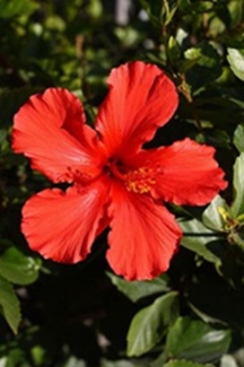
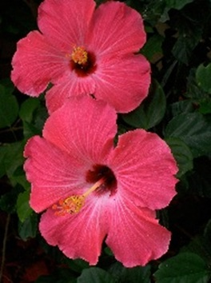

Hibiscus, also known as "Tea Rose", is very simple and beautiful plant. It grows quickly and flourishes in any soil. All you need is water, sun and some fertilizer every few months. Flowers usually grow only on the tips of the plant's branches. Once Hibiscus is a couple feet tall, feel free to carefully clip the tip bud, encouraging it to grow side branches. Do it a couple more times, and you'll have a gorgeous tree with huge canopy, producing lots of flowers almost daily! After the flower falls, clip the tip of the branch, so a new flower would frow in its place after some time! Hibiscus is quite hard to kill, and it's able to survive both drout and overwatering, sunburns and low light. You'll get enough signals if you're treating this plant wrong. And if you do everything right, you'll be rewarded with a steady flow of wonderful flowers!

Hibiscus is very easy to propagate. All you need is to clip the top 2-4 inches of a branch and put it into water! Make sure the branch is young and green: the roots can't grow from the parts covered in rigid brown bark. While your cutting has no roots of its own, it can't intake enough water to maintain lush canopy. If the leaves on your cutting starting to wilt, remove the bottom leaves, especially if they're big. In a couple of weeks, you'll see the wite dots appear at the bottom of the stem. In about a month, these dots will turn into healthy roots, ready to be planted into the soil! Back to Main Page